Fomos em nove pessoas no domingo e sentamos no pátio. O galeto chegou em vinte minutos, ainda pingando, e a polenta frita saiu duas vezes sem cobrança. A conta deu menos do que eu esperava.
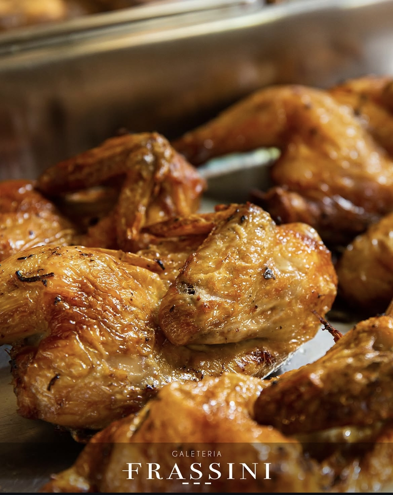
Galeto na brasa, massas frescas e buffet em Itajaí
Desde 2002 em Itajaí, a família Frassini serve a culinária italiana que aprendeu na Serra Gaúcha, com o tradicional Galeto ao Primo Canto no centro da mesa.
Entre os 20 melhores restaurantes de Itajaí no Tripadvisor
4,8 1.247 avaliações no Google
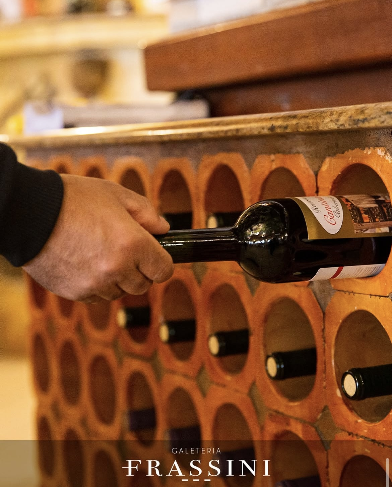
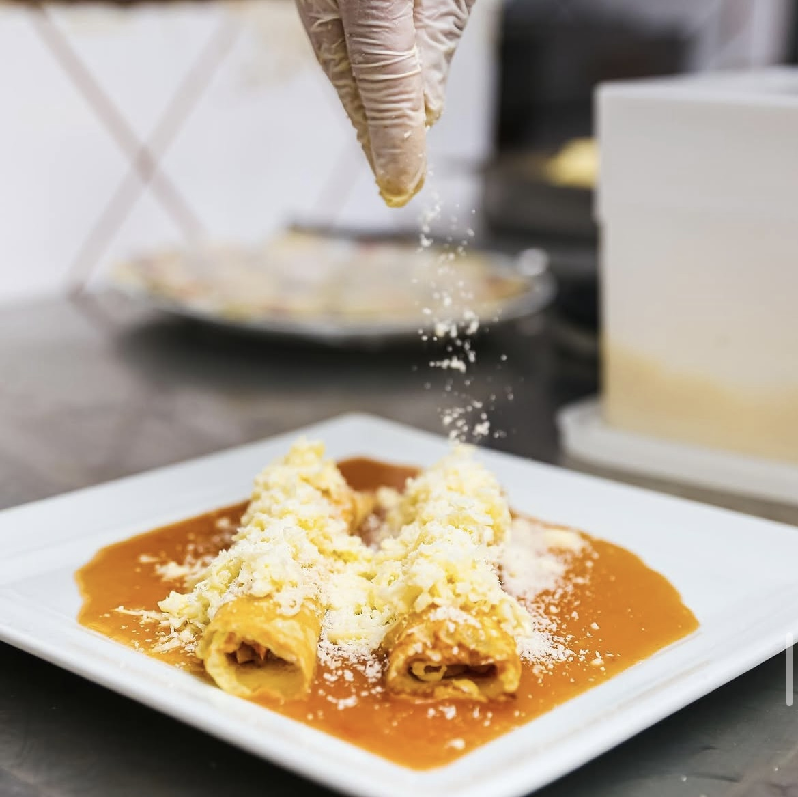
Uma tradição que atravessa gerações
Em 1986, Renato e Nadia Frassini deram início a uma história marcada pelo amor à família e à culinária italiana. Inspirada nas tradições da Serra Gaúcha, a Frassini chegou a Itajaí levando receitas e sabores que conquistaram a cidade.
Hoje, a Galeteria Frassini preserva essa herança por meio de sua gastronomia, do acolhimento e, principalmente, do tradicional Galeto ao Primo Canto.
Mais do que uma refeição, uma tradição de família.
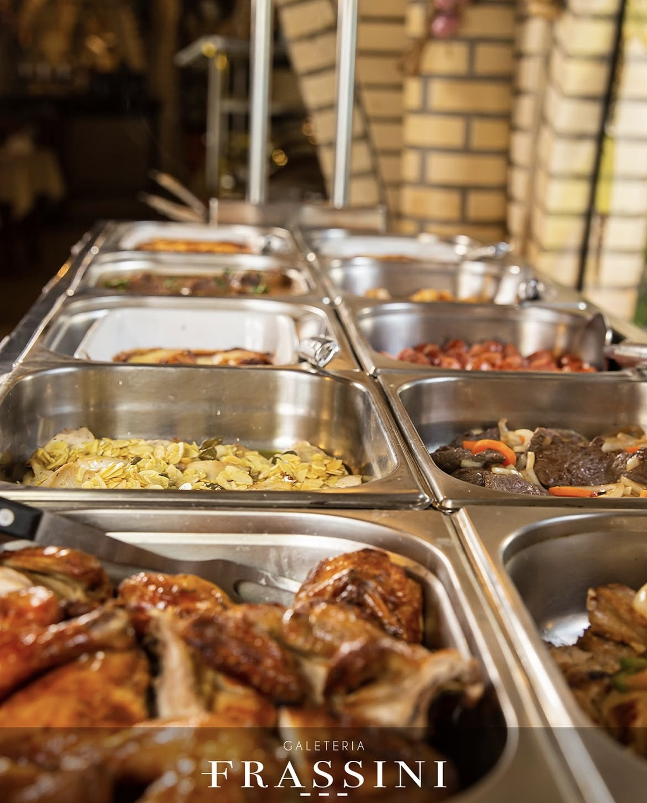
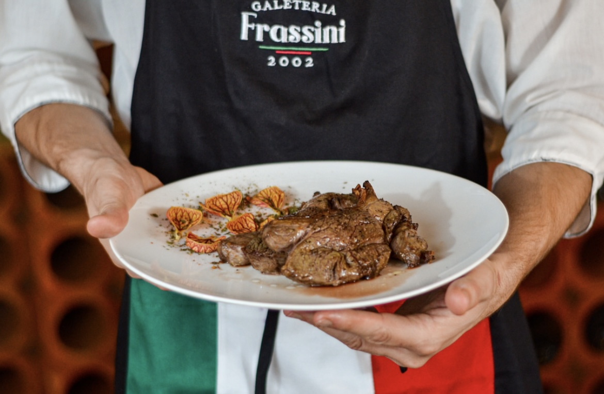
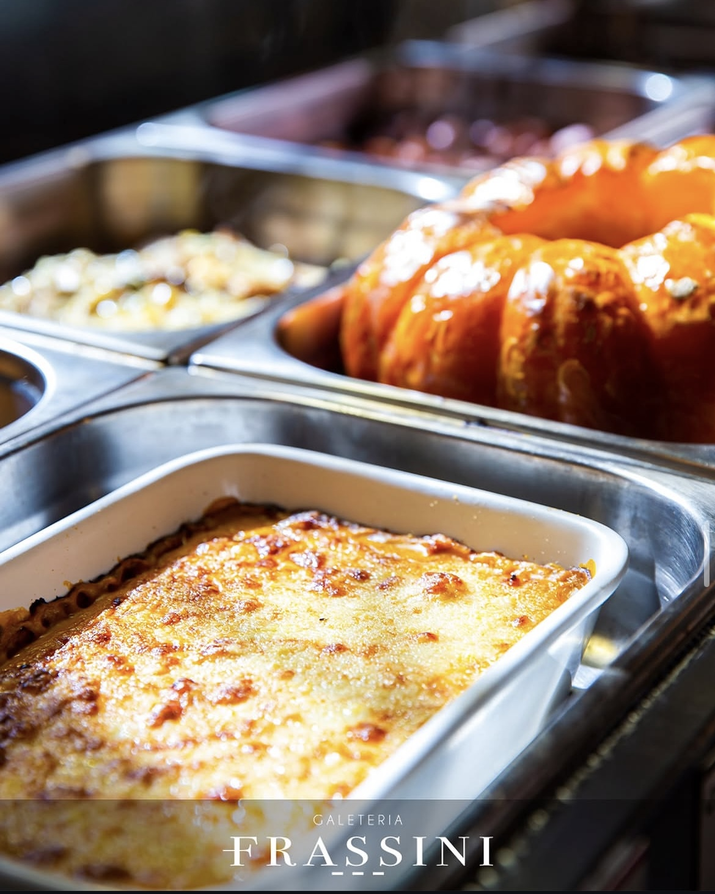
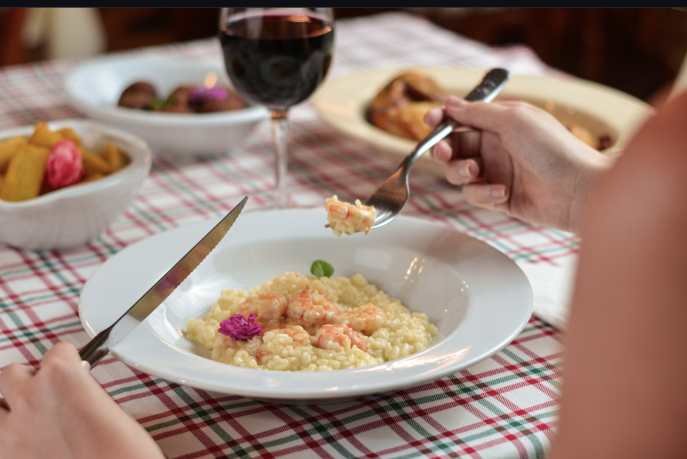
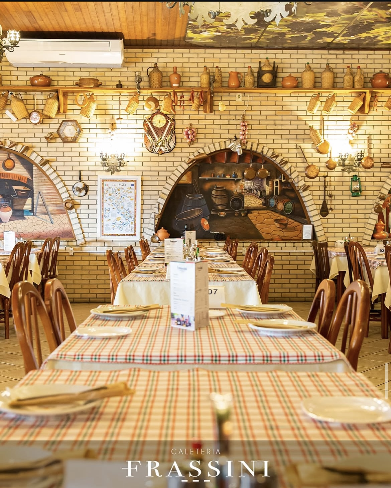
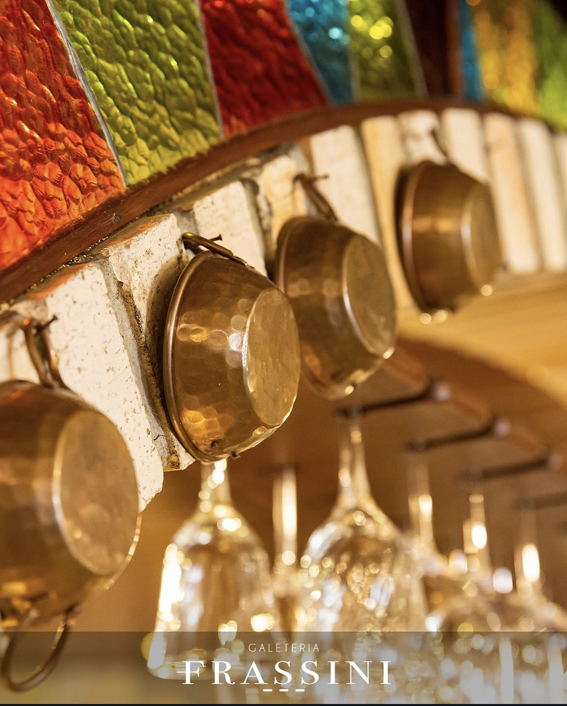
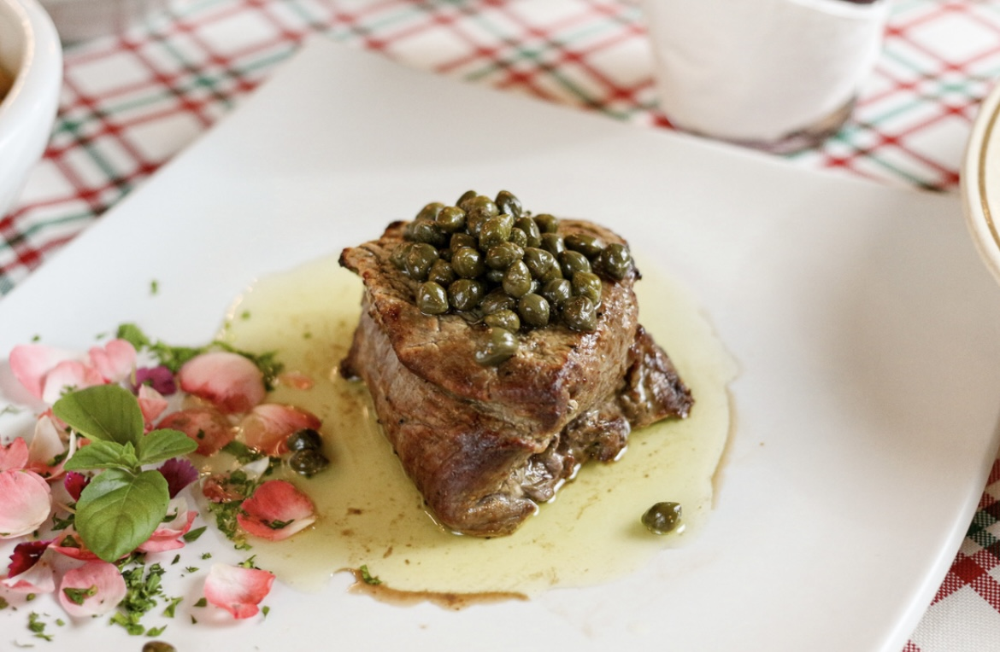
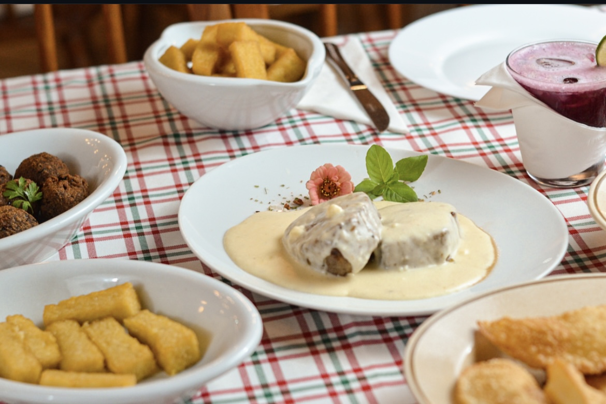
Eventos que recebemos
- Aniversários
- Casamentos
- Confraternizações de empresa
- Almoços de família
- Formaturas
- Batizados e primeira comunhão
O que escrevem no Google
Ler as 1.247 avaliaçõesMarquei o aniversário da minha mãe no mezanino, 34 convidados. A equipe ajustou o menu por telefone em dois dias e deixaram a mesa do bolo pronta antes de todo mundo chegar. Serviço atento sem ficar em cima.
Sou de Curitiba e paro aqui sempre que desço o litoral. O capeletti em brodo é o mesmo que minha avó fazia, e isso não é fácil de achar. Estacionamento próprio conta muito no fim de semana.
Onde estamos
Endereço
Rua Brusque, 480, Centro
Itajaí, Santa Catarina, 88301-000
Estacionamento próprio para 40 carros
Horários
- Segunda a quarta11h30 às 15h
- Quinta e sexta11h30 às 15h, 19h às 23h
- Sábado e domingo11h30 às 15h30, 19h às 23h
Reservas
47 3248 8573
reservas@galeteriafrassini.com.br
Galeteria Frassini